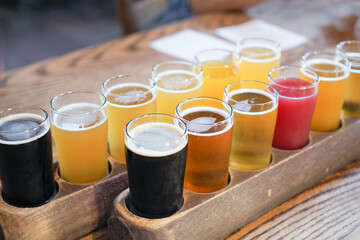

La historia de la cerveza
Un viaje a través del tiempo
La cerveza es una de las bebidas más antiguas y apreciadas en todo el mundo. Con raíces que se remontan a la antigüedad, la cerveza ha evolucionado a lo largo de los siglos para convertirse en la variedad de bebida que conocemos hoy en día. En este artículo, exploraremos la historia de la cerveza y cómo ha evolucionado a lo largo del tiempo.
Un viaje a través del tiempo
La cerveza es una de las bebidas más antiguas y apreciadas en todo el mundo. Con raíces que se remontan a la antigüedad, la cerveza ha evolucionado a lo largo de los siglos para convertirse en la variedad de bebida que conocemos hoy en día. En este artículo, exploraremos la historia de la cerveza y cómo ha evolucionado a lo largo del tiempo.
La cerveza en la antigüedad
En la antigüedad, la cerveza se producía de forma natural a partir de cereales y agua, y se consideraba una bebida sagrada en algunas culturas. Los egipcios y los sumerios eran conocidos por sus habilidades en la producción de cerveza, y se cree que la cerveza jugó un papel importante en las ceremonias religiosas y en la economía de estas civilizaciones.
La Edad Media y la cerveza
Durante la Edad Media, la cerveza se convirtió en una bebida popular entre todas las clases sociales. La producción de cerveza se convirtió en una industria importante, y se establecieron reglas y regulaciones para asegurar la calidad de la cerveza. Los monjes también desempeñaron un papel importante en la producción de cerveza durante esta época, y se cree que desarrollaron algunos de los estilos de cerveza más populares de hoy en día.
La Revolución Industrial y la cerveza
Con la llegada de la Revolución Industrial, la producción de cerveza se industrializó y se volvió más eficiente. Esto permitió a las cervecerías producir grandes cantidades de cerveza y distribuirla a nivel nacional e internacional. Sin embargo, esto también llevó a la homogeneización de los estilos de cerveza y a la pérdida de calidad en algunos casos.
La cerveza artesanal
En las últimas décadas, ha habido un resurgimiento de la cerveza artesanal, con cerveceros independientes que buscan producir cervezas con sabores y estilos únicos. Esta tendencia ha llevado a una mayor variedad y calidad en la cerveza, y ha permitido a los consumidores experimentar con diferentes estilos y sabores. La historia de la cerveza es un viaje a través del tiempo lleno de innovación y evolución. Desde la antigüedad hasta hoy
Diferentes Cervezas
Industriales y artesanales
La cerveza es una de las bebidas más populares en todo el mundo, pero no todas las cervezas son iguales. Existen dos tipos principales de cerveza: las cervezas industriales y las cervezas artesanales. Aunque ambos tipos de cerveza pueden ser deliciosos, existen importantes diferencias entre ellos. En este artículo, exploraremos estas diferencias y ayudaremos a entender mejor lo que distingue a una cerveza industrial de una cerveza artesanal.
Cervezas industriales
Las cervezas industriales son producidas por grandes compañías cerveceras con instalaciones y equipos de producción a gran escala. Estas cervezas suelen ser fabricadas en grandes cantidades y distribuidas a nivel nacional e internacional. A menudo, las cervezas industriales son fabricadas con ingredientes y procesos que buscan maximizar la eficiencia y reducir los costos, lo que puede resultar en un sabor menos complejo y menos variado
Cervezas artesanales
Las cervezas artesanales son producidas por cerveceros independientes o cervecerías de pequeña escala. Estas cervezas suelen ser fabricadas en cantidades mucho más pequeñas que las cervezas industriales, y a menudo se centran en la calidad y el sabor en lugar de la eficiencia y la reducción de costos. Las cervezas artesanales pueden utilizar ingredientes y procesos más costosos y complejos, lo que puede resultar en un sabor más rico y variado.
Sabores y estilos
Debido a las diferencias en la producción y los ingredientes, las cervezas industriales y las cervezas artesanales pueden tener sabores y estilos muy diferentes. Las cervezas industriales suelen tener un sabor más suave y homogéneo, mientras que las cervezas artesanales pueden tener un sabor más complejo y variado. Además, las cervezas artesanales a menudo experimentan con estilos y sabores únicos, mientras que las cervezas industriales suelen seguir estilos tradicionales.
Costo
Debido a las diferencias en los ingredientes y los procesos, las cervezas artesanales suelen ser más costosas que las cervezas industriales. Sin embargo, muchos consumidores consideran que el precio más alto es justificado debido a la mayor calidad y sabor de las cervezas
Tipos Artesanales
Algunas variedades crafts
Existen muchos tipos diferentes de cervezas artesanales, cada uno con su propio sabor y estilo único. Algunos de los tipos más comunes de cervezas artesanales incluyen:
Cerveza de trigo:
La cerveza de trigo se elabora con un alto porcentaje de dicho cereal en lugar de cebada. A menudo tiene un sabor suave y afrutado, y puede tener una espuma densa y persistente.
Cerveza de lúpulo:
Una cerveza de este tipo se caracteriza por su alto contenido de lúpulo, lo que le da un sabor amargo y aromático. Pueden ser de estilo IPA (India Pale Ale) o APA (Amarican Pale Ale)
Cerveza negra:
La cerveza negra es inconfundible por tener un característico color oscuro debido a la malta tostada utilizada en su producción. Puede tener un sabor a café o chocolate, y puede ser más amarga o más dulce dependiendo del estilo.
Cerveza de frutas:
La cerveza frutal se fabrica añadiendo frutas o frutos secos a la mezcla durante el proceso de su elaboración. Puede tener un sabor afrutado y dulce, y puede ser una opción popular para los no tan amantes de las cervezas amargas.
Cerveza belga:
Este tipo de cerveza se caracteriza por su estilo "belga", con sabores únicos y complejos debido a la utilización de levaduras y maltas especiales. Pueden ser de estilo Trappist, Dubbel, Tripel, entre otros.
Cerveza de barril:
La cerveza de barril en un tradicional tipo y se elabora fermentado y/o madurado en barricas de roble, lo que le da un sabor a madera y vino.
Estos son solo algunos ejemplos de los tipos de cervezas artesanales disponibles. Hay muchas más variedades y estilos, cada uno con su propio sabor único y características
-->